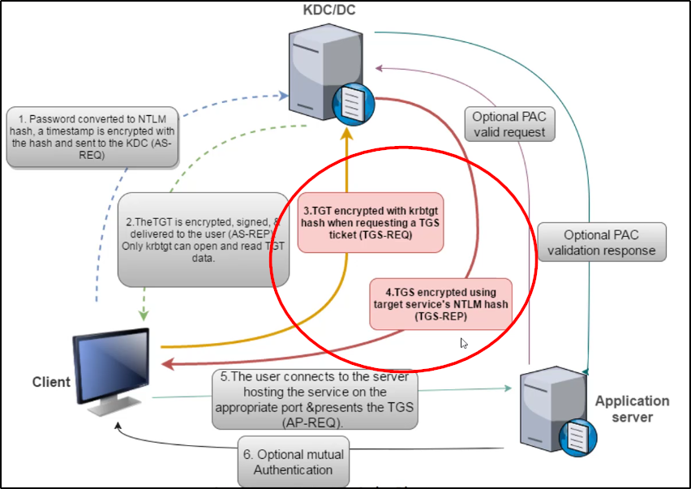
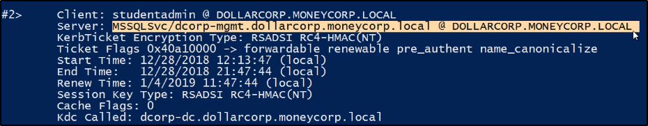

Kerberoast
Si tratta di crackare la password di un service account,
in modo offline.
Il Kerberos Ticket Session (TGS) ha una parte server,
cifrata con la password del service account.
Questo permette di richiedere un ticket e di fare
un password attack offline
I Service Account sono spesse volte ignorati,
le password vengono cambiare poche volte
e a volte hanno perfino accessi privilegiati.
Gli hash delle password possono poi essere usati per creare
dei Silver Tickets!

Ecco come trovare i Service Accounts:
Da qui possiamo sceglierne uno da targettare,
specialmente uno con più privilegi.
E.G. CN=krbtgt indica l'utente krbtgt


Una volta scelto l'account da targettare,
possiamo richiedere un TGS del servizio scelto:


Possiamo confermare di avere il ticket usando il comando "klist":

Infine, possiamo esportare i tickets:

Ecco quello del nostro servizio scelto:

Se si usa Request-SPNTicket, è possibile usare tools come
John The Ripper oppure Hashcat per crackare la password.
In alternativa, esistono degli script che permettono
ciò:
https://github.com/nidem/kerberoast/blob/master/tgsrepcrack.py
(Perfino questo script suggerisce di usare Hashcat perché è più veloce!!)